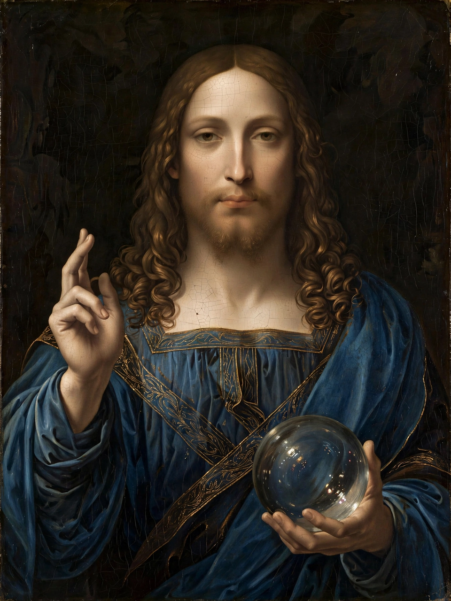

Salvator Mundi (Leonardo)
Salvator Mundi (Latin for "Saviour of the World") is a painting attributed in whole or in part to the Italian Renaissance artist Leonardo da Vinci, dated to c. 1499–1510. It depicts Jesus Christ in an anachronistic blue Renaissance dress, making the sign of the cross with his right hand while holding a transparent crystal orb in his left, signifying his role as saviour and master of the cosmos. The painting is the most expensive work of art ever sold at public auction: it fetched $450.3 million at Christie's New York on 15 November 2017.

| Salvator Mundi | |
|---|---|
| Artist | Leonardo da Vinci (attributed) |
| Year | c. 1499–1510 |
| Medium | Oil on walnut panel |
| Dimensions | 45.4 cm × 65.6 cm |
| Sale | $450.3 million, Christie's, 15 Nov 2017 |
| Owner | Reported: Mohammed bin Salman / Saudi Arabia (disputed) |
History
The painting was long known through copies and an etching by Wenceslaus Hollar, while the original was thought lost. A heavily overpainted panel was sold in Louisiana in 2005 for under $10,000 to a consortium of dealers; restoration by Dianne Dwyer Modestini and study by Leonardo scholars led to its presentation as the rediscovered original at the National Gallery, London, exhibition Leonardo da Vinci: Painter at the Court of Milan (2011). It was later owned by the Russian collector Dmitry Rybolovlev, whose adviser Yves Bouvier bought it for about $80 million and sold it to Rybolovlev for $127.5 million — a dispute that fuelled the "Bouvier affair".
The 2017 sale and aftermath
Marketed by Christie's as "the last Leonardo" in private hands, the painting sold after a 19-minute bidding contest for $400 million hammer price ($450.3 million with fees), nearly tripling the previous auction record. The buyer was reported to be acting for Saudi Crown Prince Mohammed bin Salman; the Louvre Abu Dhabi announced it would display the work, but planned exhibitions were repeatedly postponed and the painting's whereabouts and display status have remained unclear.
Attribution debate
Attribution remains contested. Several scholars accept the painting as an autograph Leonardo; others regard it as largely a workshop production — possibly by Giovanni Antonio Boltraffio or Bernardino Luini — with passages by Leonardo, noting the extent of damage and restoration. The Prado Museum downgraded it in a 2021 exhibition catalogue to a workshop attribution. The debate, entwined with the painting's price and secrecy, has made Salvator Mundi the most discussed Old Master painting of the twenty-first century.
See also
Recreated from memory as part of the muse-webcrawl project.